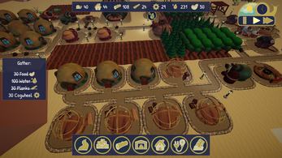
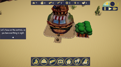
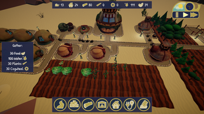

SnailPunk
Unity · C#
SnailPunk is a 3D village builder vertical slice developed in the Unity game engine during my second semester project at the S4G School for Games. It gave me valuable experience with Unity, my first insights into AI, and strengthened my teamwork skills.



About the Game
SnailPunk is a village builder vertical slice in which the player helps little snails survive and build a small village. The main focus of the game is the tutorial, which is designed to teach the player the basics of a village builder.
The Project
The project was developed during our second semester at S4G School for Games over the course of 10 weeks by a team of five people.
Tools
Development:
- Unity (2022.3)
- Rider
- Perforce
Management:
- Trello / Taiga / Jira
- Google Workspace
Responsibilities
As the only engineer on the team, I was responsible for all programming, engine work, and implementation, as well as the design and implementation of the user interface. Since there was no dedicated game designer, I was also involved in game design. In addition, I handled communication with our external sound designer and implemented the code-related tasks for integrating the sounds.
Learnings
With SnailPunk I gained valuable experience in the Unity engine as well as my first experience in creating an NPC behavior system. Furthermore, I was able to improve my coding skills. Although my code was not perfect yet, I made clear progress compared to my first semester project.
Highlights
You can view and download the source files here.
Snail Behavior System
Each snail is assigned a workstation if space is available. They are then given the appropriate snail
behavior script, which manages all the tasks they need to complete. They also take care of their basic needs, such as food and sleep.
Tutorial System
The tutorial system is based on Scriptable Objects. Each tutorial consists of multiple steps,
which in turn contain several tasks. I aimed to make the system as modular as possible, but later developed a new tutorial system
that is easier to use and more expandable. You can find it
here.
Team
The team consisted of five people: one programmer (me), one producer, and three artists, as well as one external sound designer.